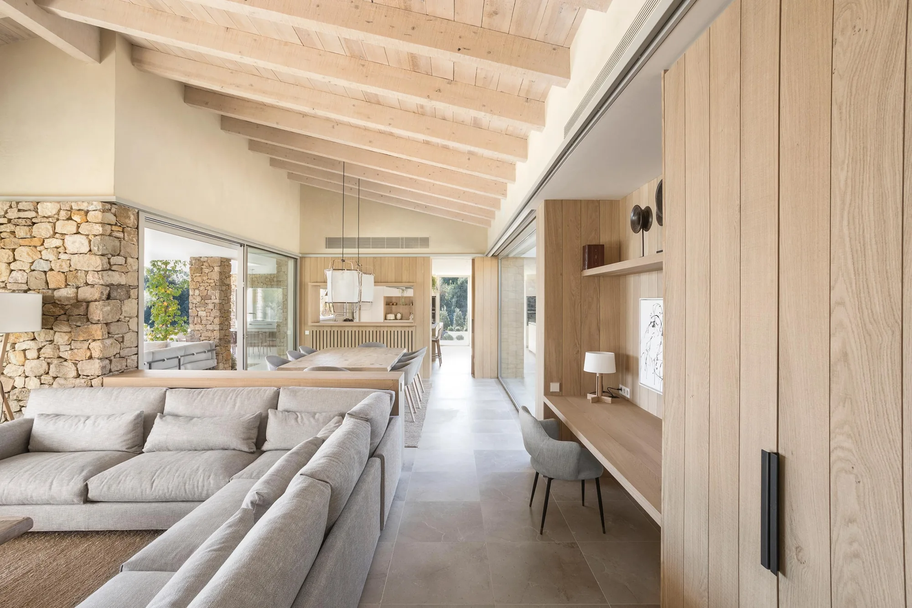

01ESTUDIO
ESTUDIO
DE LUZ
Localización · Año pendientes
PROYECTO POR INCORPORAR
Cocinas · Baños · Interiorismo · Materiales
Cocinas, baños y cerámica.
En Xaixo Home te acompañamos en la elección de los materiales y soluciones para tu hogar, con un equipo con experiencia en reforma e interiorismo.
El espacio para nuestras próximas historias.
Las imágenes de esta selección son referencias visuales, no obras de Xaixo Home.
Localización · Año pendientes
PROYECTO POR INCORPORARLocalización · Año pendientes
PROYECTO POR INCORPORARImágenes de inspiración: Costa Brava House · Dom Arquitectura · Fotografía © Jordi Anguera. Referencias temporales para esta propuesta.